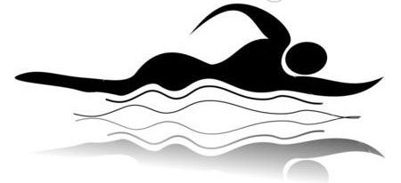

2018-08-31
自由泳：1KM
仰泳：1KM
今天下水比较迟（17：50）上来的时候已经18：47了。好多蚊子！
2018-08-30
两个月以来，几乎每次去游泳都给自己下了个目标：2KM。时隔2个月，今天再次来到余月水库，站在岸上，一眼望去，突然感觉以前印象中好大好宽的余月水库，显得很窄，很短。此时此刻的心境，就如学成归来的游子，一览众山小的登峰人。有了两个月以来的训练作铺垫，环游余月水库，一点都不费劲。感慨人生应该亦是如此，眼界越宽，你的底气就越足！与优秀同行！

2018-08-29
今天带老婆、女儿一同游泳，女儿这是第二次跟我下水了。一开始还是有点胆怯，后来在妈妈的鼓励下，还是跟我一起下水了。抱着游泳圈，就是不会往前游。
2018-08-28
自由泳：1KM
仰泳：1KM
2018-08-27
今天连哄带骗把女儿拉到水边，给了个游泳圈给她，一开始她是抵触的，胆怯，不敢下水。我试图慢慢引导她一步步走下台阶进入水中，直到双腿离开台阶，完全漂浮水中！这应该是她人生第一次在野外下水吧。
2018-08-25
自由泳：1KM
仰泳：1KM
2018-08-24
自由泳：1Km
1km：蛙泳，仰泳
2018-08-22
自由泳：1KM
仰泳：1KM
仰泳还得练习。
2018-08-21
自由泳 ：1KM
1KM :放松
2018-08-20
自由泳：1KM
蛙泳：1KM
因为前些日子，下雨，河水暴涨，同时水流速度较快，逆游比较费劲。
2018-08-19
自由泳：1KM
蛙泳：1KM
2018-08-17
近几天受台风影响，暑气骤消，随之而来的是狂风暴雨。但是有几天没下水，全身难受，特想到水里泡一泡。于是顶着风、冒着雨，驱车来到桥下。打开后备箱才发现，跟屁虫和泳镜都丢在电瓶车里了！幸好女儿的小救生圈和泳镜还在，能凑合着。我找了个绳子一头拴住泳圈，一头拴着要，就下水了。
虽然岸上风很大，站一会就得瑟直抖，但是到水里就不冷了。顺着水流往下游，很轻松。可是逆流而上就费劲了。就在往回游时，我感觉不对劲，回头一看，泳圈不见了！被吹得好远，绳子还在腰上，完了！应该是当初系的活结，被水流冲散了！在环顾四周，我还在河中间，河面波涛汹涌，风高浪急，心里有点紧张。算了，等游上岸在去找泳圈吧。为了节省体力，我换作蛙泳姿势，往回游，可是没有多远，左腿又被拖在腰上的绳子缠住了，我挣扎了几下，试图把绳子踢掉。事与愿违，绳子越缠越紧。不能慌，要冷静！我心里暗示着自己。那好吧，我就把腰上的绳子解掉，我停了下来，双手去解绳子，由于水浑，也看不清，完全凭感觉。不解还好，这下反而把活结解成死结，彻底搞不下来了！怎么办？绳子还缠在腿上呢。只有去理一理脚上的绳子了。可能是绳子太长，缠绕的很复杂，几次尝试都失败了。没辙，只能拖着这条残腿往前游了。上天保佑，最后成功登岸！
2018-08-14
自由泳：1KM
蛙泳：1KM
2018-08-13
自由泳：1KM
蛙泳：1KM
自由泳：我发现头在水中的位置很重要，它会影响的整个身体的平衡。头往水下插深一点，腿就不容易往下沉。
蛙泳：手在完成抱水后，大臂加紧两肋，小臂往回收，尽可能的贴近胸口。接着在往前伸，准备下一次抱水。
2018-08-12
自由泳：1KM
蛙泳：1KM
2018-08-11
训练量
自由泳：2千米
心得
慢，是一种能力。记得自由泳一次游的最远的距离是2千米（8月4日），但是游完以后还是喘的厉害。今天我特意放慢节奏，把每个动作做到位，体会节奏：每个动作的顺序，重点是腿打水时机和次数。我发现打水的时机应是手切入水中，向前延伸，这是会感觉整个身体都处于滑行状态，当前伸的手要下沉时，这是就需要腿打水，再次推动身体前行，两腿共打三次。腿打完水，不要动了，接下来，由手来划水，产生动力，在手推水的时候，腿是不动的，就像被拖着走一样。
这个节奏应该是：左手划水–腿打水（3次）–右手划水，依次循环往复。每次打腿三次，一只手臂划3次，呼吸一次（个人情况）
这种全浸式自由泳特别适合长距离项目，游着不累，姿势也潇洒。几乎没有水花，和打水声，我在游的时候都能听到自己的心跳。
2018-08-08
训练量
自由泳：1千米 ×1
1KM ：蛙泳 +仰泳
心得
自由泳转体力量起源于手臂。手臂切入水中后，要尽可能的往肩膀的延长线延伸，就好象用手去够一个永远够不着的东西。此时身体会自然的随之旋转，这就是自由泳身体旋转的精髓所在！
昨天偶然建发现深呼一口气是，左胸口隐隐作疼，不知何故。午睡醒来后就不疼了。今天游完上岸后，也有一点感觉。不知是不是疲劳所致。
2018-08-07
与大哥畅游。
2018-08-06
训练量
自由泳：1KM × 1
蛙泳：1KM ×1 放松
心得
我今天特地测试了下，蛙泳一个完整的周期（一次划水，一次蹬水），能游多远。目测大概是2米的样子。
蛙泳的收腿蹬水这一系列动作，做的干净利落，尤其就在腿蹬完水后要绷直，才能达到好的效果。
2018-08-05
训练量
自由泳：1KM × 1
蛙泳：1KM × 1 放松
心得
每次大雨后隔天，大河的水就特别清澈。徐徐的微风，吹皱了平静的河面，斜阳的余辉洒在河面上，波光鳞鳞。脱光衣服，跳入河中，扑通一声，整个世界都安静了。人置身水中，河水的丝丝凉意渗入每寸肌肤，每个毛孔。酷热的天气，扰动着不宁的心绪，此时此刻，烟消云散，好不惬意啊！
2018-08-04
训练量
自由泳：2×1KM
心得
前1KM游完，并不像以前那样气喘吁吁，这可能是得益于休息了一天，并且全程节奏控制的比较好。因为游完1KM 感觉不错，所以又接着游了回去，完成了又一个1KM！
虽然昨天晚上睡觉把右边的腰扭伤了，但是今天游泳时并没有加重病情。可见自由泳对腰部肌肉没有很好的锻炼效果。
2018-08-02
训练量
自由泳：1KM 多组
仰泳：1KM 多组
心得
因为自己的泳镜没带，把小女儿的泳镜临时拿来用。太小了，感觉很不舒服，还漏水。返程时就没再用泳镜了，换成仰泳姿势。
仰泳虽然没很快的速度，但是，特别适合养生式锻炼，对力量要求不高，老人小孩比较适合用。
不带泳镜情况下，仰泳需注意手臂划水动作的处理，不要将水溅到眼睛、嘴巴或鼻子里。
头
平仰于水面
躯干
躯干要旋转，带动肩部
手部动作
当躯干顺时针旋转至极限，左手整个手臂露出水面后，大臂带动小臂向头的延长线方向伸展，此时小臂和手掌完全放松，小臂自然下垂，指尖向下，这样有利于手上的水流下。大臂越过头顶时，小臂伸直，插入水中，开始划水，划水至与身体完全贴合。至此，单手一个动作周期结束。右手同理，两手交替进行。
脚部动作
与自由泳一样，不再赘述。
2018-08-01
自由泳：8×50m 冲刺
2018-07-31
训练量
自由泳：1000m 1组
蛙泳：1000m 1组
心得
自由泳最后阶段好几次想放弃，还是咬咬牙坚持下来，完成了目标。
2018-07-30
训练量
自由泳：1000m 1组
蛙泳：1000m 1组
心得
今天自由1000m全程首次一次性游完。值得纪念。
2018-07-28
兄弟三人畅游白石天河。
2018-07-27
自由泳：1000m，分2组
蛙泳：1000m，1组
自由泳长距离有很大进步。
2018-07-25
今天带着小女儿，没敢游太远。估计自由泳1000m的样子。
2018-07-24
训练量
自由泳：1000m，分5段完成
蛙泳：1000m
心得
蛙泳为什么比自由泳省力？蛙泳手和脚是交替运动的。踢退后全身处于一个静止滑行的状态，期间人是休息的。而自由泳动作难度要比蛙泳大，手脚要不停的做动作。同时和要配合摆头换气。
2018-07-23
训练量
昨天在淘宝上买了一个新泳镜，今天试试，感觉很不错。
蛙泳：1×1000m
自由泳：1×1000m
心得
今天一开始用的是自由泳游了1km，整体感觉很不错，自信心有了提升。1KM的目标我是分成了好几个小目标完成的。1KM的蛙泳我是一次性游完的，中间没有休息。个人感觉，蛙泳比自由泳要省力的多，游起来不费劲。
2018-07-20
今天游了大概有400米。2×100m自由永和2×100m蛙泳。没有游多长时间主要是因为泳镜总是进水，弄的眼睛睁不开，所以就没坚持了。
心得
自由泳全身放松，放慢节奏，调整好呼吸，也可以游很远的。
自由泳，划水时，手不应放在身体两侧，而是放在肩膀下放。